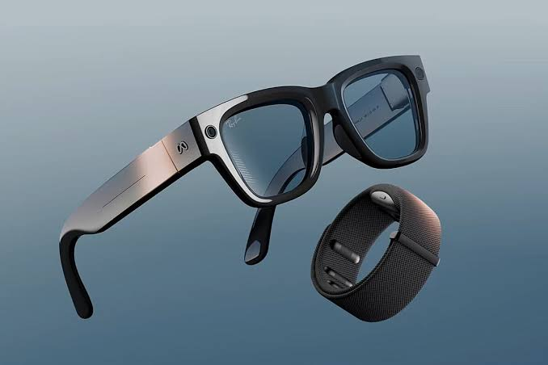
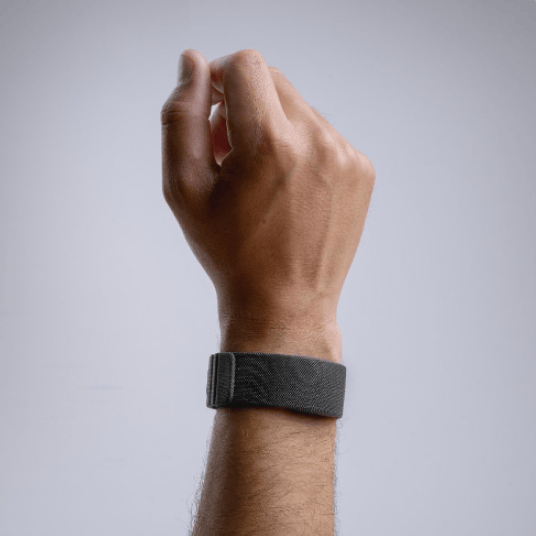

Interacción discreta
Un gesto casi invisible sirve de orden. Se evita hablar en voz alta o levantar la mano en público, dos cosas que cansan y incomodan con otros mandos.
Fundamentos de Interacción Persona-Ordenador · Dispositivo de entrada
Una pulsera que lee la intención de tus dedos: controlar un ordenador sin teclado, sin ratón y sin tocar nada.
Presentada en septiembre de 2025 Tecnología sEMG + IA Hasta 18 h de batería
La Meta Neural Band es una pulsera de tela sin pantalla que se lleva en la muñeca. Dentro tiene sensores de electromiografía de superficie (sEMG): detectan las señales eléctricas diminutas que el cerebro envía a los músculos del antebrazo cuando decide mover un dedo. Un modelo de inteligencia artificial las traduce a órdenes: moverse por un menú, seleccionar, ajustar el volumen o incluso escribir.
Meta la presentó en septiembre de 2025 junto con las gafas Meta Ray-Ban Display, que son el dispositivo que controla. Lo interesante para la IPO es que el usuario no tiene que ejecutar un movimiento visible: basta la intención, con un gesto mínimo del pulgar, y funciona con la mano caída, en el bolsillo o bajo la mesa.
En IPO la pregunta de fondo es siempre cómo se comunican el usuario y el sistema con el menor esfuerzo posible. La Neural Band propone una respuesta nueva a esa pregunta y, además, es un producto real y reciente, no un prototipo de laboratorio.
Un gesto casi invisible sirve de orden. Se evita hablar en voz alta o levantar la mano en público, dos cosas que cansan y incomodan con otros mandos.
No necesita ver la mano ni buena luz, como los sistemas de gestos por visión. La mano puede estar fuera del campo visual de cualquier cámara.
Al captar la señal muscular antes de que haya un movimiento amplio, abre la puerta a personas con poca movilidad. Meta la prueba con la Universidad de Utah en un proyecto para esquí adaptado.
Desde principios de 2026 hay una función de escritura a mano en acceso anticipado: se traza cada letra con el dedo sobre cualquier superficie y aparece como texto.
La investigación publicada en Nature en 2025 indica que el sistema generaliza a usuarios nuevos sin entrenar un modelo para cada uno: se pone y se usa.
La tecnología pasa a segundo plano: miras el mundo y no una pantalla. Garmin ya la ha propuesto para controlar pantallas del coche sin tocarlas.
Piensas en mover un dedo y se envía una señal eléctrica por los nervios.
En el antebrazo se activan unas fibras musculares, y eso genera una señal medible.
Los sensores captan la señal y un modelo de IA decide qué gesto era.
La orden llega por Bluetooth: desplazar, pulsar, ajustar volumen o escribir.



Imágenes: Meta (uso exclusivamente docente). Más fotos y vídeos en la página oficial.
Cada generación de dispositivos de entrada ha intentado acortar la distancia entre lo que el usuario quiere hacer y lo que le llega al ordenador. La Neural Band no sustituye a todos, pero sí intenta reemplazar a los mandos de las gafas inteligentes (touchpad y voz) y mejora a los gestos por cámara.
Heredado de la máquina de escribir. Es preciso para escribir, pero necesita una superficie y las dos manos.
Introduce el puntero y la manipulación directa de la interfaz gráfica. Sigue necesitando una mesa y una mano ocupada.
Eliminan el periférico: la mano toca directamente lo que ve. Es el mando de móviles y de las gafas inteligentes de primera generación (en la patilla).
Kinect, Leap Motion y los asistentes de voz permiten controlar sin contacto, pero dependen de que la cámara vea la mano o de que hables en voz alta.
La pulsera Myo, de Thalmic Labs, ya leía señales musculares, pero era poco precisa y sin un uso claro. La empresa dejó de venderla en octubre de 2018.
Facebook, hoy Meta, compra esta startup especializada en EMG y empieza a investigar una pulsera para su futuro hardware de realidad aumentada.
Retoma el EMG con un modelo de aprendizaje automático que se adapta a la mayoría de personas sin calibrar, con gestos y escritura mucho mejor resueltos que en Myo.
| Dispositivo | Qué necesita | Discreción | Limitación principal |
|---|---|---|---|
| Teclado | Una superficie y las dos manos | Baja | No sirve en movimiento |
| Ratón / touchpad | Una mesa y una mano | Media | Solo para apuntar y seleccionar |
| Pantalla táctil | Tocar la pantalla | Media | Ocupa la mano y la vista |
| Gestos por cámara | Que la cámara vea la mano | Baja | Depende de la luz y del encuadre |
| Voz | Hablar en voz alta | Baja | Poco privada y poco útil con ruido |
| Myo (2014-2018) | Pulsera sEMG | Alta | Poca precisión y pocos usos |
| Meta Neural Band | Pulsera sEMG en la muñeca | Alta | Solo funciona con las gafas Ray-Ban Display |